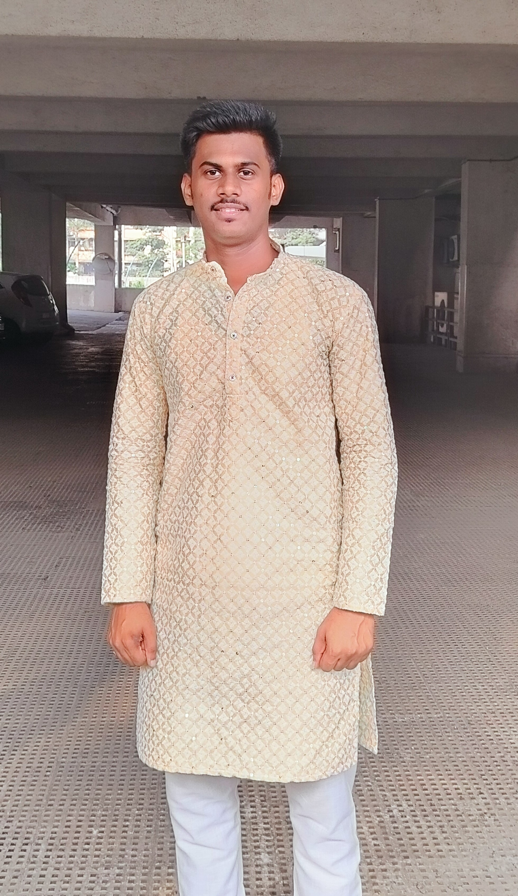

Rohan Surve
Aspiring DevOps Engineer
I am Rohan Surve, a recent graduate with a Bachelor's degree in Computer Science, eager to embark on a career as a DevOps Engineer. My academic background has provided me with a solid understanding of software development, system administration, and cloud computing. I have hands-on experience with essential DevOps tools such as Docker, Kubernetes, Jenkins, and Ansible, gained through academic projects and internships. My proficiency in scripting languages like Python and Bash, along with a keen interest in continuous integration and continuous deployment (CI/CD) practices, drives my passion for automating workflows and enhancing system reliability. I am highly motivated, a quick learner, and excited to contribute to a forward-thinking team where I can grow and apply my skills to build and maintain scalable, efficient infrastructure.
Skills
- Jenkins
- Docker
- Kubernetes
- Ansible
- Git
- Python
- Bash
About Me
I am Rohan Surve, a passionate and dedicated aspiring DevOps Engineer with a Bachelor's degree in Information Technology. My journey in the tech world began with a deep fascination for software development and system operations, which eventually led me to explore the dynamic field of DevOps. Throughout my academic career, I have cultivated a robust understanding of various programming languages, including Python, Java, and Bash, and have developed a strong proficiency in automation tools like Docker, Kubernetes, Jenkins, and Ansible.
During my internships, I had the opportunity to work on real-world projects where I implemented CI/CD pipelines, automated deployment processes, and optimized cloud infrastructure on platforms like AWS and Azure. These experiences have honed my skills in troubleshooting, system monitoring, and performance tuning, ensuring high availability and scalability of applications.
I am a proactive learner who thrives in fast-paced environments and enjoys solving complex problems. My ability to collaborate effectively with cross-functional teams, coupled with a relentless drive for continuous improvement, positions me as a promising candidate for a DevOps Engineer role. I am excited to contribute my skills and grow professionally within an innovative organization that values agility, efficiency, and cutting-edge technology.
Portfolio
Here are some of my works:
- Project 1
- Project 2
- Project 3